Transforme tes idées en activités à imprimer.
Bingo, mots mêlés, mots croisés et 9 autres activités. Écris tes mots ou utilise du contenu prêt à l'emploi, puis exporte en PDF pour imprimer à la maison, pour une fête ou où tu veux.


12 activités dans une seule app
Choisis-en une, écris ton contenu et Wibblo prépare la fiche pour toi.
Jeux
-
Bingo
Cartes de bingo avec des mots, des nombres, des images ou des questions
-

Paires
Jeux de paires à imprimer et à découper, avec des images, des mots ou des questions
-

Domino éducatif
Dominos à enchaîner, avec des images, des mots ou des questions
Activités
-
Mots mêlés
Mots mêlés avec les mots que tu choisis
-
Mots croisés
Mots croisés avec les mots et les indices que tu définis
-

Relie les colonnes
Relie chaque élément d'une colonne à son partenaire dans l'autre
-

Cartes de vocabulaire
Cartes pour mémoriser des mots avec leur définition ou traduction
-

Code secret
Messages codés avec des symboles, des nombres ou des opérations mathématiques à décoder
-

Chemin de réponses
Chemins d'étapes à choix multiple à résoudre dans l'ordre
Maths
-
Générateur de maths
Fiches d'exercices d'addition, de soustraction, de multiplication et de division
-

Colorie en résolvant
Modèles à colorier en résolvant des exercices de maths
-

Sudoku
Grilles de sudoku 4×4 ou 9×9 avec trois niveaux de difficulté
De vraies fiches faites avec Wibblo
Voici comment elles sortent : prêtes à imprimer. Touche une fiche pour l'agrandir.
Exemples en anglais : dans l'app, tes fiches sont dans ta langue.


Comment ça marche
- 1
Choisis l'activité
Bingo, mots mêlés, mots croisés, maths et plus encore.
- 2
Écris tes mots ou utilise du contenu prêt à l'emploi
Ajoute tes propres mots, questions ou nombres, ou choisis un thème déjà préparé.
- 3
Exporte en PDF et imprime
Vérifie l'aperçu, exporte la fiche et partage-la ou imprime-la.
Tutoriels
Étape par étape, avec des captures de l'app.
Comment faire un bingo
Voir les étapes avec des captures
-
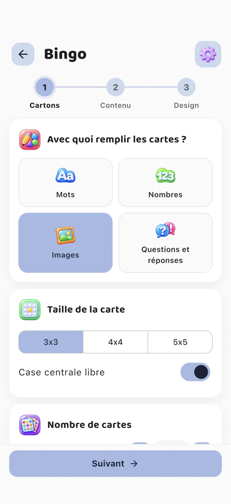
Étape 1. Choisis ce qui remplit les cartes (mots, nombres, images ou questions), leur taille et leur nombre.
-
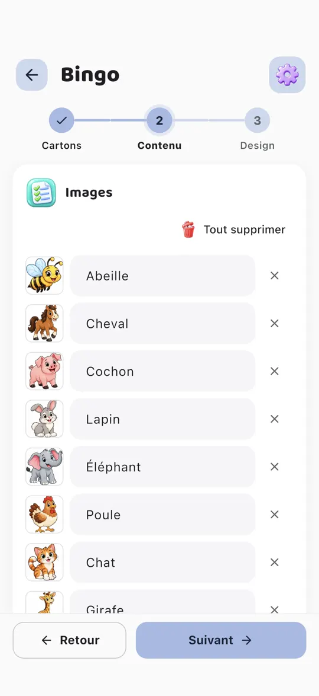
Étape 2. Ajoute le contenu : écris tes mots ou choisis des images dans la banque. Tu peux aussi utiliser tes propres photos.
-
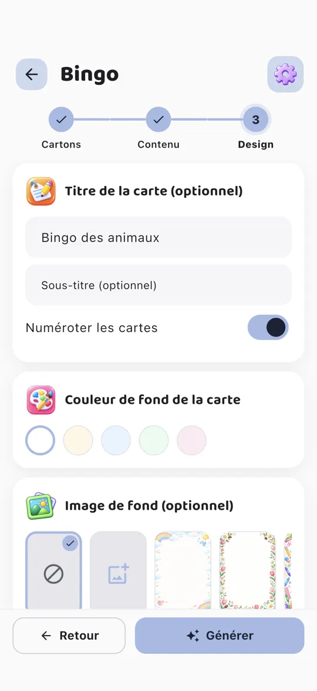
Étape 3. Donne-lui un titre et, si tu veux, une couleur ou une image de fond.
-
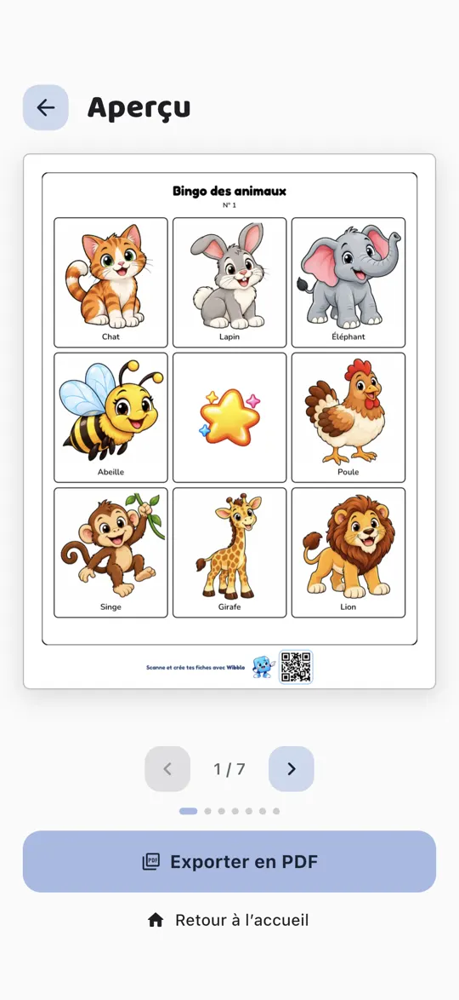
Étape 4. Touche Générer, vérifie l'aperçu et exporte les cartes en PDF.
Comment faire des mots mêlés
Voir les étapes avec des captures
-
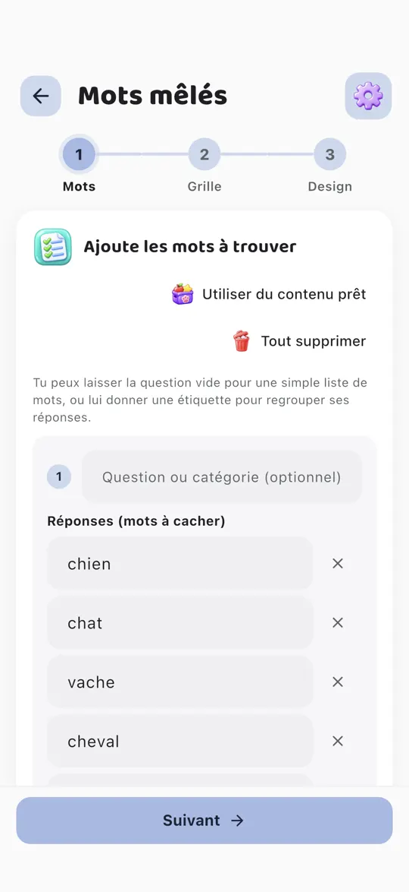
Étape 1. Écris les mots à trouver ou touche « Utiliser du contenu prêt ». Tu peux les regrouper sous une question ou une catégorie.
-
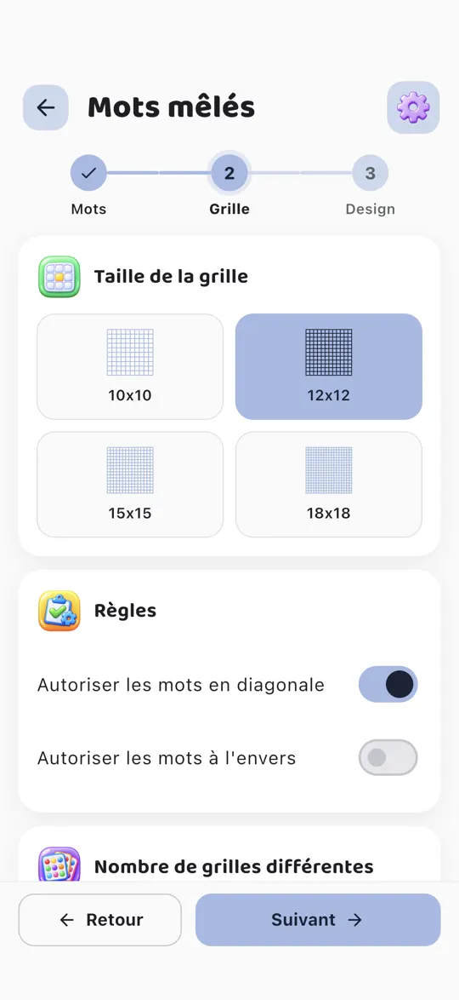
Étape 2. Choisis la taille de la grille et si les mots peuvent aller en diagonale ou à l'envers.
-
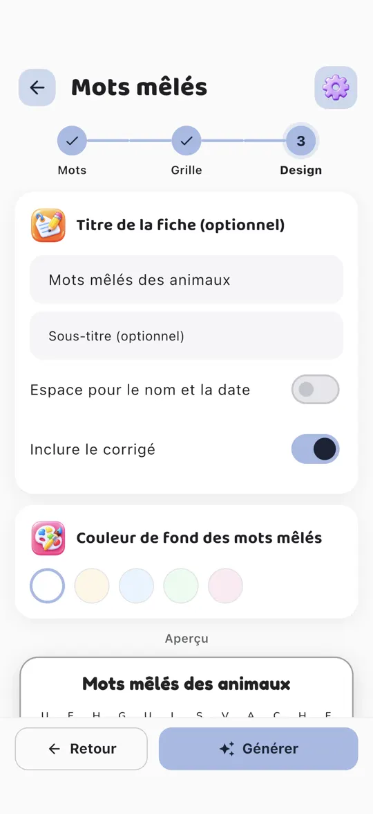
Étape 3. Donne-lui un titre et une couleur, et choisis d'inclure ou non la feuille de réponses.
-
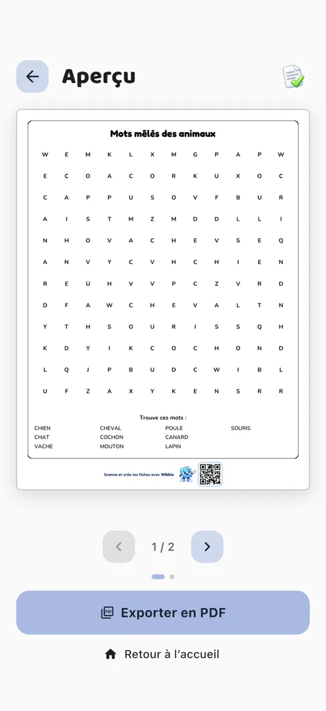
Étape 4. Touche Générer, vérifie l'aperçu et exporte en PDF.
Comment faire des mots croisés
Voir les étapes avec des captures
-
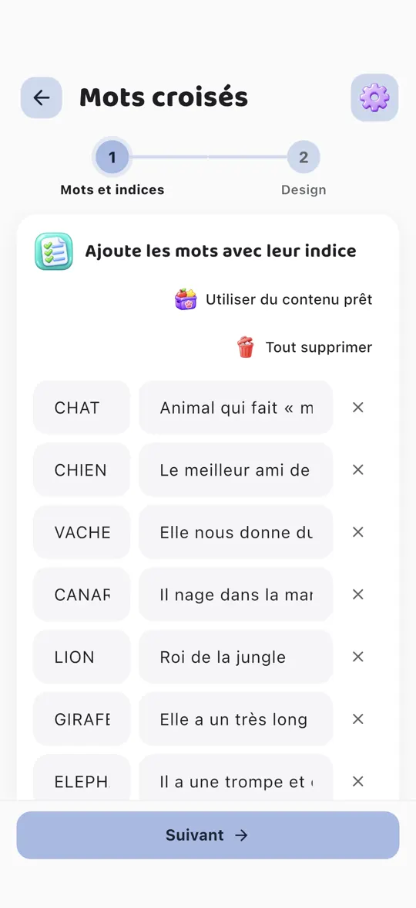
Étape 1. Écris chaque mot avec son indice, ou touche « Utiliser du contenu prêt ».
-
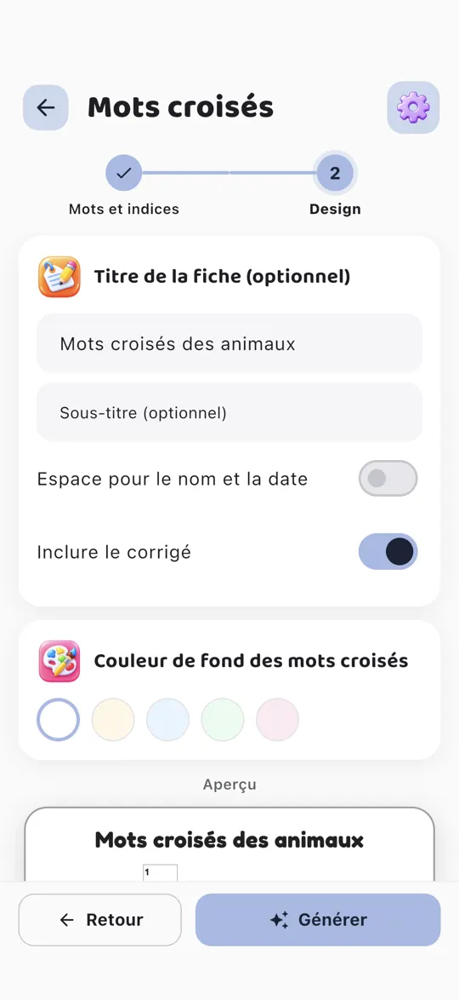
Étape 2. Donne-lui un titre et une couleur, et choisis d'inclure ou non la feuille de réponses.
-
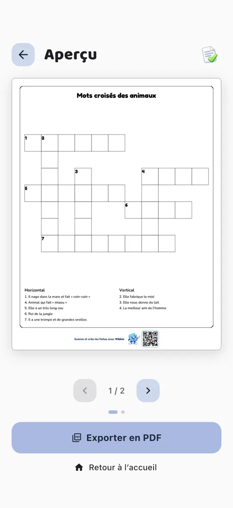
Étape 3. Touche Générer : Wibblo croise les mots tout seul. Vérifie l'aperçu et exporte en PDF.
Comment faire une fiche de maths
Voir les étapes avec des captures
-
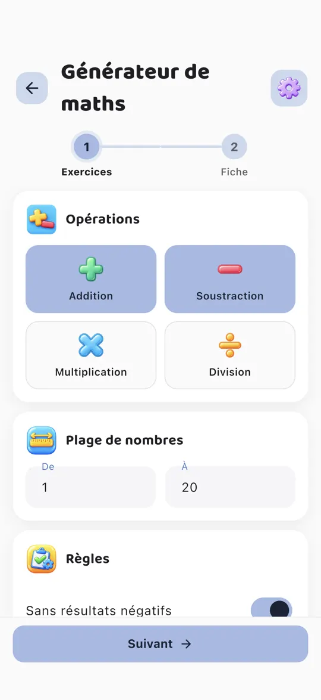
Étape 1. Choisis les opérations, la plage de nombres et les règles, par exemple sans résultat négatif.
-
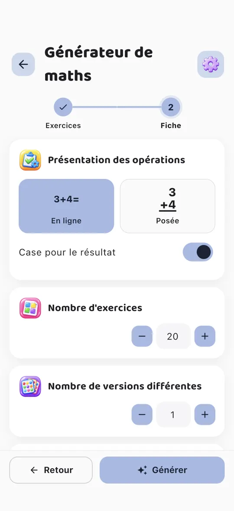
Étape 2. Choisis la présentation (en ligne ou verticale), le nombre d'exercices et de versions différentes.
-
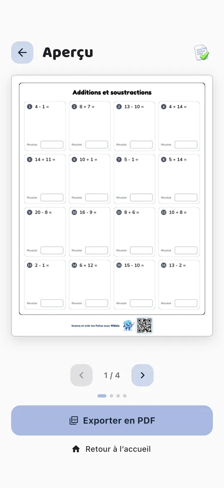
Étape 3. Touche Générer, vérifie l'aperçu et sa feuille de réponses, puis exporte en PDF.
Comment faire un code secret
Voir les étapes avec des captures
-
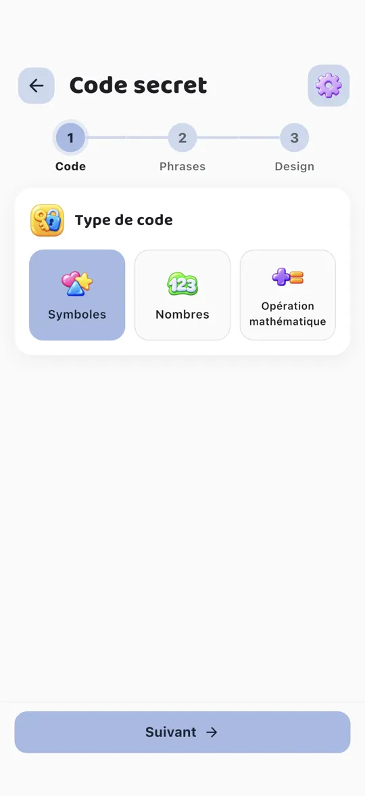
Étape 1. Choisis le type de code : symboles, nombres ou opérations mathématiques.
-
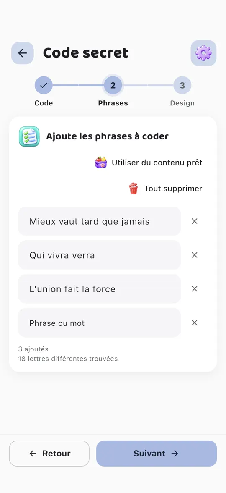
Étape 2. Écris les phrases à coder ou touche « Utiliser du contenu prêt » (des proverbes, par exemple).
-
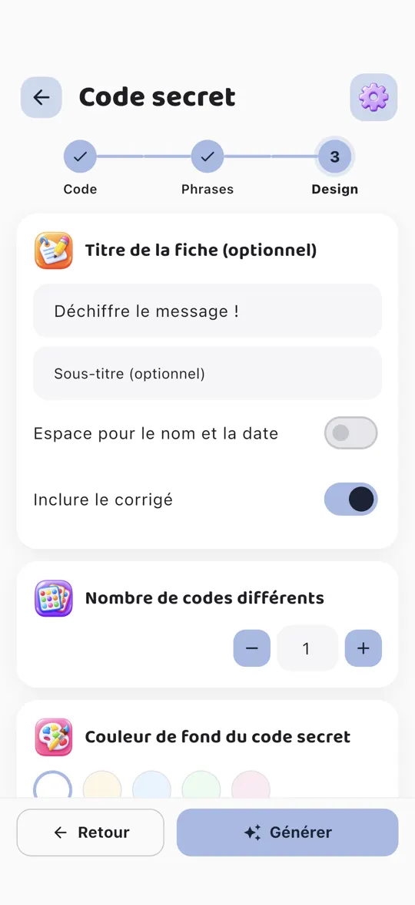
Étape 3. Donne-lui un titre et choisis combien de codes différents tu veux.
-
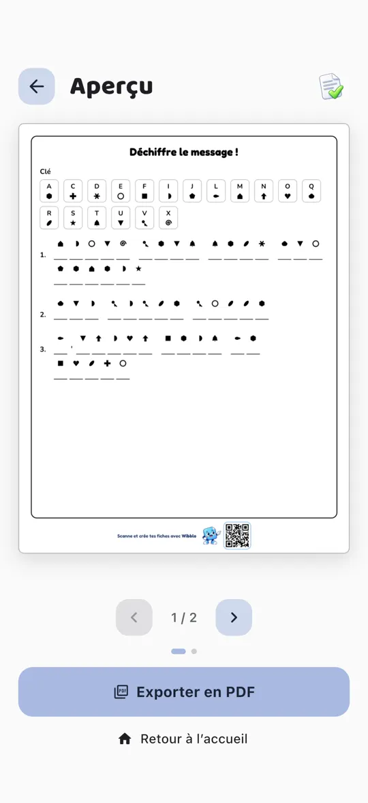
Étape 4. Touche Générer, vérifie l'aperçu et exporte en PDF.
Gratuit et Pro
Wibblo se télécharge gratuitement. Pro débloque tout. Le prix de Pro dépend de ton pays et de ta boutique, et tu le vois dans l'app avant de t'abonner.
Gratuit
- Les 12 activités
- 5 fiches par semaine, avec un filigrane
- Quelques fonds, banques d'images et thèmes de contenu prêt
- Tes 10 dernières fiches enregistrées dans « Mes fiches »
 Wibblo Pro
Wibblo Pro
- Fiches illimitées
- PDF sans filigrane, avec l'option de masquer le pied de page avec le QR
- Tous les fonds et les thèmes de couleur de l'app
- Toutes les banques d'images et tout le contenu prêt
- Toutes tes fiches enregistrées dans « Mes fiches »
Questions fréquentes
Comment imprimer en recto verso ?
Certaines fiches ont un verso : les cartes de bingo avec verso décoratif, les cartes de vocabulaire recto verso et les cartes de paires ou de dominos avec verso. Active l'impression recto verso sur ton imprimante. Pour les pages en portrait, retourne sur le bord long ; pour les pages en paysage (bingo avec 2 cartes par page), sur le bord court. Si ton imprimante n'imprime pas en recto verso, imprime d'abord les pages impaires, remets le papier, puis imprime les pages paires.
À quoi sert le code QR en bas des fiches ?
Il mène à cette page, pour que la personne qui reçoit une fiche sache comment elle a été faite et puisse télécharger Wibblo. Avec Wibblo Pro, tu peux masquer le pied de page dans les Réglages.
Comment annuler l'abonnement ?
Sur iPhone ou iPad : Réglages → ton nom → Abonnements → Wibblo Pro. Sur Android : Google Play → ton profil → Paiements et abonnements → Abonnements. Tu peux aussi y aller depuis l'app, sur l'écran Wibblo Pro → « Gérer l'abonnement ». Pro reste actif jusqu'à la fin de la période déjà payée.
Comment restaurer mes achats ?
Ouvre l'écran Wibblo Pro et touche « Restaurer les achats », avec le même compte Apple ou Google que celui utilisé pour l'achat. L'app vérifie aussi automatiquement à chaque ouverture.
Dans quelles langues est Wibblo ?
En espagnol, anglais, français et portugais. La première fois, elle utilise la langue de ton téléphone, et tu peux la changer quand tu veux dans les Réglages. Le contenu prêt existe aussi dans chaque langue.
Faut-il un compte ou internet ?
Non. Wibblo ne demande pas de compte et fonctionne sans internet, sauf pour acheter ou restaurer Pro. Tes fiches sont enregistrées uniquement sur ton téléphone.

Crée ta première fiche aujourd'hui
Télécharge Wibblo gratuitement et essaie les 12 activités.